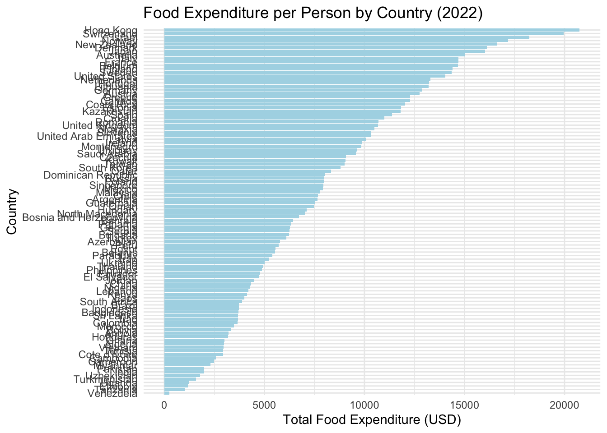

0.1 Executive Summary
This blog analyzes global food expenditure per person and the proportion of countries recording high food prices. These datasets highlight disparities in food expenditure across nations, as well as the impact of food price volatility in recent years.
0.2 Problem Description
The fluctuation of global food prices, driven by economic and environmental factors, poses a significant challenge, particularly for lower-income nations. This analysis explores two main aspects: how much people spend on food in different countries and how high food prices have impacted countries globally.

0.3 Data Description
We used two datasets from Our World in Data:
- Global Food Expenditure per Person (2022): This dataset provides the annual expenditure on food per person across various countries.
- Key Variables:
Entity: Country nameTotal food expenditure: Total food expenditure per person (USD)
- Key Variables:
- Proportion of Countries Recording High Food Prices (2011-2021): This dataset tracks the percentage of countries experiencing abnormally or moderately high food prices from 2011 to 2021.
- Key Variables:
Year: Year of observationProportion of countries with high food prices: Percentage of countries recording high food prices
- Key Variables:
0.4 Data Cleaning
The datasets were cleaned to remove missing values and ensure that only complete observations were included in the analysis.
0.5 Analysis
0.5.1 Food Expenditure per Person
The dataset on global food expenditure per person provides insights into how much people spend on food annually across different countries. The bar chart in Figure 1 shows the food expenditure per person for various countries in 2022.

Table 1 shows the top 10 countries with the highest food expenditure per person.
| Country | Total Food Expenditure (USD) |
|---|---|
| Hong Kong | 5002.200 |
| Hong Kong | 4318.868 |
| Switzerland | 4313.358 |
| Israel | 4245.512 |
| Hong Kong | 4181.517 |
| Switzerland | 4109.086 |
| Norway | 4093.419 |
| Israel | 3996.604 |
| Switzerland | 3970.205 |
| Switzerland | 3908.800 |
0.5.2 Proportion of Countries with High Food Prices
The proportion of countries experiencing abnormally high or moderately high food prices increased significantly between 2011 and 2021, especially during 2020, as shown in Figure 2.
Table 2 shows the proportion of countries with abnormally high and moderately high food prices in 2020, the year with the most significant spike in high food prices.
| Year | Abnormally High (%) | Moderately High (%) |
|---|---|---|
| 2020 | 50.0 | 16.7 |
| 2020 | 13.3 | 20.0 |
| 2020 | 26.2 | 31.0 |
| 2020 | 26.7 | 28.9 |
| 2020 | 13.2 | 36.8 |
| 2020 | 9.8 | 19.5 |
| 2020 | 0.0 | 0.0 |
| 2020 | 33.3 | 0.0 |
| 2020 | 28.6 | 21.4 |
| 2020 | 15.4 | 30.8 |
| 2020 | 9.1 | 29.5 |
| 2020 | 20.4 | 27.7 |
0.6 Conclusion
This analysis of global food expenditure and food price volatility reveals the economic disparities faced by countries around the world. Wealthier nations tend to have higher food expenditure per person, but their overall share of income spent on food is lower than that of lower-income countries.
In terms of food price volatility, the data shows that many countries experienced abnormally high food prices in 2020, largely due to the global pandemic’s impact on supply chains and economies.
0.7 Key Findings
Food Expenditure: Wealthier nations, such as the United States and Switzerland, spend significantly more on food per person compared to lower-income nations (see Figure 1 and Table 1). High Food Prices: 2020 saw a significant spike in countries experiencing abnormally high food prices (see Figure 2), underscoring the vulnerability of food markets during global crises.
0.8 References
Our World in Data. (2023). Global food prices and expenditure patterns. Our World in Data. https://ourworldindata.org/food-prices